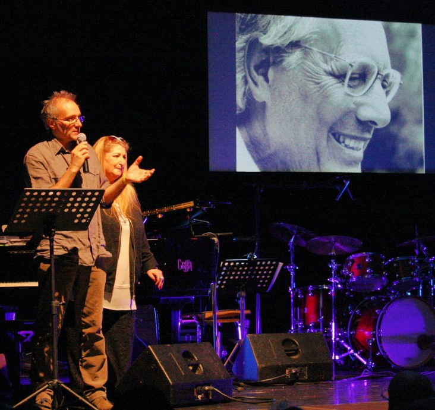
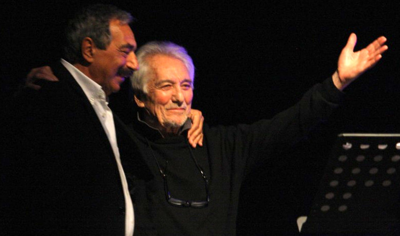

Teatro PIME 29 marzo 2018

Questa volta presenta Marino Bartoletti, qui ritratto insieme all'anima di questo spettacolo, ideatrice e produttrice Silvia Reggiani.
L'edizione è a supporto dell'organizzazione umanitaria 'Scarp de Tenis', presentata da Roberto Guanaglione.

Il primo ospite illustre: il Maestro Enrico Intra, che delizierà il pubblico duettando con i maestri Farina e Tomelleri.
